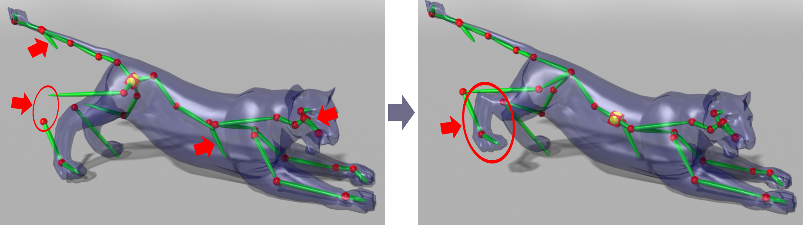
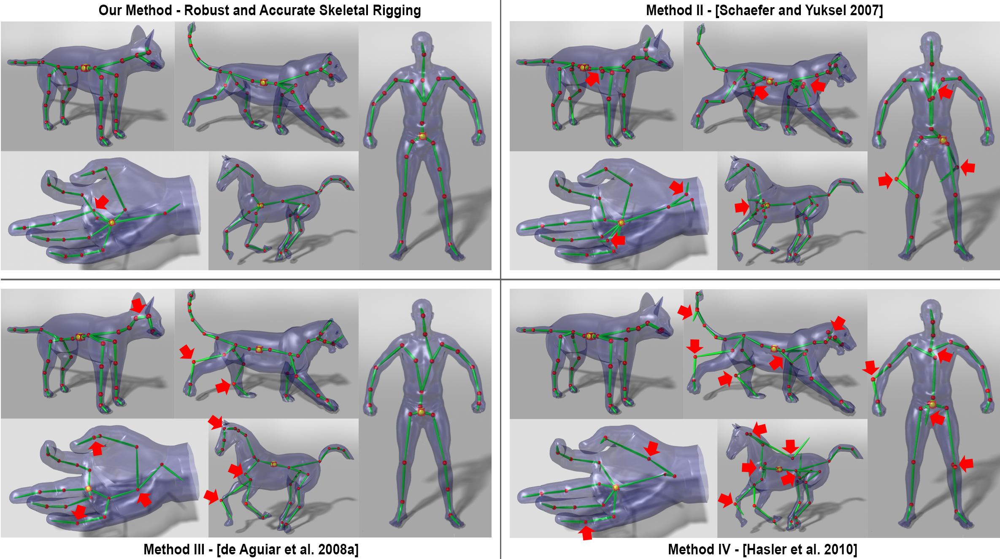
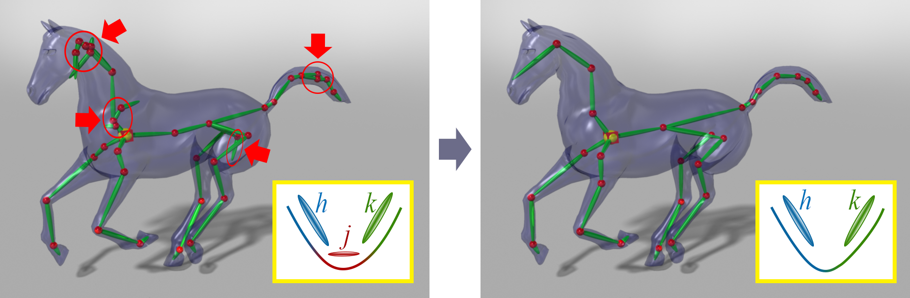
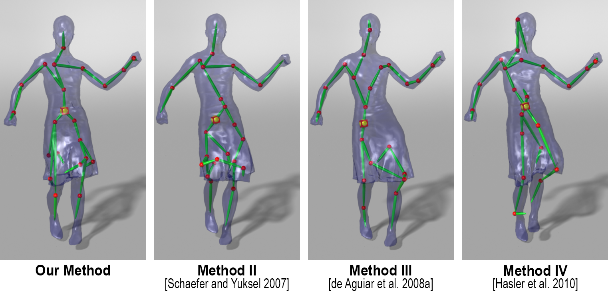
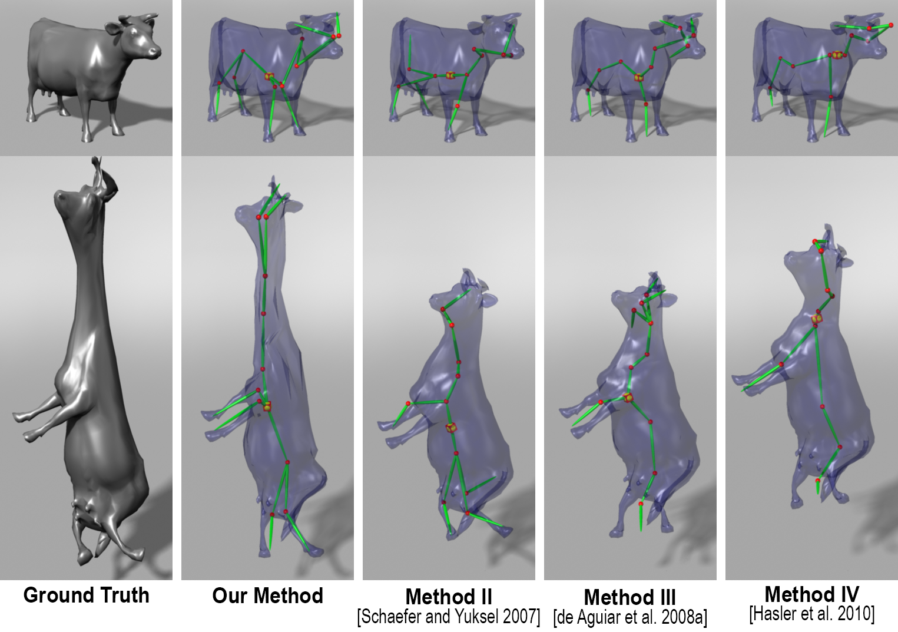
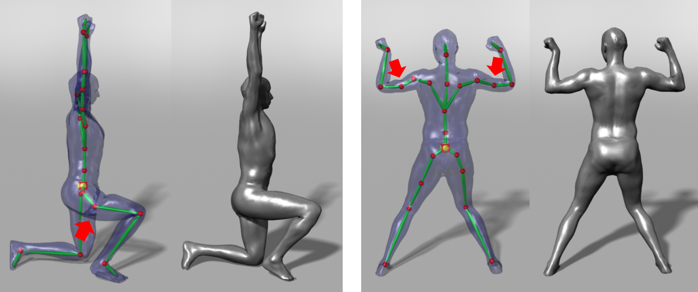

Robust and Accurate Skeletal Rigging from Mesh Sequences
论文信息
- 标题：Robust and Accurate Skeletal Rigging from Mesh Sequences
- 作者：Binh Huy Le, Zhigang Deng（休斯顿大学）
- 发表：ACM Transactions on Graphics (SIGGRAPH)
0. 背景知识
0.1 什么是骨骼绑定（Skeletal Rigging）？
在3D动画制作中，"骨骼绑定"是连接3D模型（称为"皮肤"或"网格"）与虚拟骨骼系统的过程。这个过程就像给木偶安装关节：
graph LR
A["3D网格模型<br/>(Mesh)"] --> B["骨骼系统<br/>(Skeleton)"]
B --> C["蒙皮权重<br/>(Skinning Weights)"]
C --> D["骨骼动画<br/>(Skeletal Animation)"]
为什么需要骨骼绑定？
- 让角色能够自然地弯曲和运动
- 只需要控制少量骨骼参数，就能驱动大量顶点
- 游戏引擎和动画软件（如Maya、Blender）都支持骨骼动画
0.2 什么是线性混合蒙皮（LBS - Linear Blend Skinning）？
线性混合蒙皮是目前最广泛使用的骨骼蒙皮方法。它的核心思想是：每个网格顶点受多个骨骼影响，影响程度由权重决定。
数学表达式：
$$ \mathbf{v} i' = \sum{j=1}^{B} w _{ij} \left( \mathbf{R} _j \mathbf{t} _j \right) \mathbf{v} _i $$
其中：
- \(\mathbf{v} _i\) 是第 \(i\) 个顶点在初始姿态（静止姿态）的位置
- \(\mathbf{v} _i'\) 是变换后的位置
- \(w _{ij}\) 是顶点 \(i\) 受到骨骼 \(j\) 影响的权重
- \(\mathbf{R} _j\) 是骨骼 \(j\) 的旋转矩阵
- \(\mathbf{t} _j\) 是骨骼 \(j\) 的平移向量
- \(B\) 是骨骼的总数
直观理解：
- 想象你用手拉动一块布的不同位置
- 靠近手指的布跟随手指移动（高权重）
- 远处的布只受轻微影响（低权重）
0.3 骨骼（Bone）与关节（Joint）
- 骨骼（Bone）：刚体部分，在旋转时保持形状不变
- 关节（Joint）：连接骨骼的枢纽点，骨骼绕此点旋转
骨骼A 骨骼B
┌─────┐ ┌─────┐
│ │ │ │
│ │ 关节 ├── │
└─────┘ ● └─────┘
0.4 本文要解决的核心问题
传统骨骼绑定需要人工操作，非常耗时耗力。本文提出自动化方法：从一组示例姿态（网格序列）自动生成骨骼系统。
输入：一组不同姿态的3D网格序列（如运动捕捉数据）
输出：
- 骨骼结构（哪些骨骼相连）
- 关节位置
- 蒙皮权重
- 各姿态对应的骨骼变换
1. 问题与动机
1.1 传统方法的局限性
现有基于示例的骨骼绑定方法（如 Schaefer & Yuksel 2007、de Aguiar 2008、Hasler 2010）存在两个主要问题：
问题1：过度估计的骨骼初始化
初始化时产生的骨骼数量往往过多，导致：
- 不准确的骨骼
- 冗余的骨骼（可以被其他骨骼组合替代）

Figure 2: 红箭头标注的是过度估计的骨骼
问题2：关节位置不准确
关节位置的估计误差会逐级累积——从根关节到叶关节，误差越来越大。
1.2 本文的核心贡献
- 鲁棒性：通过自动剪枝冗余骨骼，比之前方法更鲁棒
- 准确性：通过关节约束优化，比之前方法更准确
2. 方法概述
2.1 整体流程
flowchart TD
A["输入：示例姿态序列<br/>Mesh Sequences"] --> B["Step 1: 初始化<br/>Initialization"]
B --> C["Step 2: 拓扑重建<br/>Topology Reconstruction"]
C --> D["Step 3: 迭代绑定<br/>Iterative Rigging"]
D --> E["更新蒙皮权重<br/>Update Weights"]
E --> F["更新关节位置<br/>Update Joint Positions"]
F --> G["更新骨骼变换<br/>Update Bone Transformations"]
G --> H{"骨骼剪枝？"}
H -->|是| I["剪枝冗余骨骼<br/>Prune Bones"]
I --> D
H -->|否| J{"达到最大<br/>迭代次数？"}
J -->|否| E
J -->|是| K["输出：骨骼 & 蒙皮模型"]
B -->|"32个初始簇"| C
D -->|"交替更新"| E
Figure 3: 本文方法的完整流程
2.2 三个主要步骤
| 步骤 | 名称 | 功能 |
|---|---|---|
| 1 | 初始化 | 从示例姿态识别刚体部分，初始化骨骼变换 |
| 2 | 拓扑重建 | 构建骨骼层级结构（哪些骨骼相连） |
| 3 | 迭代绑定 | 交替优化权重、关节位置、骨骼变换，并剪枝冗余骨骼 |
3. 初始化（Initialization）
3.1 运动驱动聚类（Motion-Driven Vertex Clustering）
核心思想：运动相似的顶点属于同一个刚体部分。
使用 Linde-Buzo-Gray (LBG) 算法对顶点进行聚类：
- 具有相似刚体变换的顶点被分到同一簇
- 初始分为1簇，然后分裂成2、4、8、16、32簇
3.2 簇分裂-EM策略
为什么要分裂簇？
初始一个簇包含所有顶点，然后逐步分裂，让算法自动找到合适的骨骼数量。
如何选择分裂种子？
选择使得重建误差 × 到质心距离最大的顶点作为新簇种子：
$$ s = \arg\max _{i} \left{ d \left( \mathbf{u} _i, \mathbf{O} \right) e(i) \right} $$
其中：
- \(d(\mathbf{u} _i, \mathbf{O})\) 是顶点到质心的欧氏距离
- \(e(i)\) 是重建误差
- \(L(i)\) 是顶点 \(i\) 的簇标签
原始簇 分裂后
┌────────┐ ┌────────┐
│ ●种子│ → │ 簇1 │ ●种子
│ 顶点 │ │ 顶点 │
│ ● │ ├────────┤
│ ● │ │ 簇2 │
│ ● │ │ 顶点 │
└────────┘ └────────┘
3.3 连接块生成
聚类算法只考虑运动相似性，忽略网格连接信息。因此，同一刚体部分可能被分割到多个簇。
解决方案：对每个簇，找出所有连通分量（连接块），每个连通分量初始化一个独立的骨骼变换。
4. 拓扑重建（Topology Reconstruction）
4.1 骨骼图构建
构建加权图 \(G\)：
- 节点：每个骨骼
- 边权重 \(g(j,k)\)：两个骨骼共享关节的概率
权重计算公式：
$$ g(j,k) = \frac{ \sum_{f=1}^{F} \left| \left[ \mathbf{R} _j^f | \mathbf{t} _j^f \right] \mathbf{C} _{jk} - \left[ \mathbf{R} _k^f | \mathbf{t} _k^f \right] \mathbf{C} {jk} \right|^2 }{ \sum{i=1}^{N} w _{ij} w _{ik} } $$
直觉理解：
- 分子：关节拟合误差越小 → 两骨骼越应该相连
- 分母：两骨骼的权重混合越大 → 它们越可能共享关节
4.2 最小生成树（MST）
使用 Kruskal 算法从加权图 \(G\) 构建最小生成树，即得到骨骼拓扑结构。
加权图 最小生成树（骨骼拓扑）
A ──0.3── B A ──0.3── B
│╲ │ ╲
0.5╲ 0.4 │ → ╲
│ ╲ │ C
C ──0.6── D C ──0.6── D
5. 迭代绑定（Iterative Rigging）
这是本文的核心创新部分！
5.1 优化目标
最小化目标函数：
$$ E = E _D + \lambda _S E _S + \lambda _J E _J $$
三项分别为：
- \(E _D\)：数据拟合项 —— 最小化网格重建误差
- \(E _S\)：权重平滑项 —— 保证相邻顶点权重相似
- \(E _J\)：关节约束项 —— 保证骨骼绕关节旋转
5.2 权重更新（Skinning Weights Update）
问题：传统最小二乘法对噪声敏感，且可能产生"蒙皮断裂"。
解决方案：刚性拉普拉斯正则化
定义拉普拉斯矩阵 \(\mathbf{L}\)： $$ L {ik} = \begin{cases} 1 - \sum{h \in N(i)} d _{ik} & \text{if } k = i \ -d _{ik} & \text{if } k \in N(i) \ 0 & \text{otherwise} \end{cases} $$
其中刚性权重：
$$ d {ik} = \frac{1}{F} \sum{f=1}^{F} \frac{ \left| \mathbf{v} _i^f - \mathbf{v} _k^f \right|^2 }{ \left| \mathbf{u} _i - \mathbf{u} _k \right|^2 } $$
效果：刚性权重 \(d _{ik}\) 衡量顶点间距离在运动中是否保持不变
- 距离保持不变 → \(d _{ik} \approx 1\) → \(L _{ik} \approx 0\) → 权重应相似
- 距离变化大 → \(d _{ik} \ll 1\) → \(L _{ik} \approx 1\) → 允许权重不同
5.3 骨骼变换更新（Bone Transformations Update）
关键创新：关节软约束
约束骨骼 \(j\) 和 \(k\) 在共同关节处一起旋转：
$$ \min_{[\mathbf{R} _j^f | \mathbf{t} _j^f]} E j^f = \frac{1}{N} \sum{i=1}^{N} w _{ij}^2 \left| [\mathbf{R} _j^f | \mathbf{t} _j^f] \mathbf{u} _i - \mathbf{q} i^f \right|^2 + \lambda \sum{(j,k) \in S} \left| [\mathbf{R} _j^f | \mathbf{t} _j^f] \mathbf{C} _{jk} - \mathbf{q} ^f(\mathbf{C} _{jk}) \right|^2 $$
其中 \(\mathbf{q} ^f(\mathbf{C} _{jk})\) 是骨骼 \(k\) 变换后的关节位置。
无关节约束 有关节约束
┌─────────┐ ┌─────────┐
│ ● │ 骨骼不绕关节旋转 │ ●────┼── 骨骼绕关节旋转
│ ╱ ╲ │ 造成变形错误 │ ╱ ╲ │
└─────────┘ └─────────┘
Figure 6: 关节约束的效果对比
5.4 骨骼剪枝（Skeleton Pruning）
动机：初始化时故意生成过多骨骼（过度估计），然后剪枝。
剪枝策略：利用权重正则化项
如果骨骼 \(j\) 的权重平方和小于最大权重平方和的1%，则剪枝：
$$ \text{如果} \sum_{i=1}^{N} w _{ij}^2 < 10^{-2} \max k \sum{i=1}^{N} w _{ik}^2 \text{，则移除骨骼 } j $$
剪枝前 剪枝后
┌───────────────┐ ┌───────────────┐
│ 骨骼j(冗余) │ │ │
│ ↓ w≈0 │ → │ 骨骼A │
│ 骨骼A ●────●骨骼B │ ●────● 骨骼B
└───────────────┘ └───────────────┘
Figure 7: 骨骼剪枝示意
6. 实验结果
6.1 数据集
| 数据集 | 顶点数 | 帧数 | 骨骼数 |
|---|---|---|---|
| cat-poses | 7,826 | 29 | 8 |
| lion-poses | 5,000 | 930 | 4 |
| horse-gallop | 8,431 | 4,827 | 41 |
| hand | 7,997 | 4,318 | 65 |
| dance | 7,061 | 201 | 16 |
| scape | 12,500 | 7,023 | 25 |
| samba | 9,971 | 175 | 23 |
| cow | 2,904 | 204 | 11 |
6.2 定量对比
| 方法 | 我们的方法 | Method II (Schaefer 2007) | Method III (de Aguiar 2008) | Method IV (Hasler 2010) |
|---|---|---|---|---|
| RMSE | 0.80 | 2.87 | 1.10 | 0.84 |
| 骨骼数量 | 24 | 24 | 24 | 24 |
我们的方法在所有测试数据集上都达到了最低的RMSE（均方根误差）。
6.3 定性对比

Figure 10: 与三种最先进方法的对比。红箭头标注了问题区域。
观察：
- 我们的方法在所有5个数据集上都产生了合理的结果
- 其他方法在不同数据集上都有各自的问题
- 我们的方法即使只使用一组参数也能处理所有数据集
6.4 鲁棒性测试

Figure 8: 不同数据集的骨架提取结果
即使初始化为不同数量的簇（4, 8, 16, 32），我们的方法都能收敛到相似的最终骨架结构。
6.5 复杂模型应用

Figure 13: 即使裙子高度变形，我们的方法也能生成合理的骨骼结构

Figure 14: 弹性模型也能被成功绑定
7. 局限性
7.1 计算效率
- 方法需要多次迭代剪枝，如果初始化骨骼过多，运行时间会显著增加
- 目前只适用于离线应用
7.2 对输入数据的依赖
- 输入姿态的运动范围受限可能导致关节不对称
- 噪声和不完整的运动数据会影响结果质量
7.3 近似能力的局限
LBS模型的近似能力有限，无法捕捉某些复杂的非线性变形。

Figure 15: 上臂和上腿的4个冗余骨骼无法被剪枝，因为LBS需要它们来近似肌肉鼓起效果
8. 结论
- 提出了一种鲁棒且准确的自动化骨骼绑定方法
- 核心创新：
- 关节约束优化：保证骨骼绕关节旋转
- 骨骼剪枝：自动移除冗余骨骼
- 权重平滑正则化：刚性拉普拉斯正则化
- 在所有测试数据集上优于三种最先进的方法
- 输出可直接用于游戏引擎和3D动画软件
9. 公式速查表
| 公式编号 | 名称 | 用途 |
|---|---|---|
| (1a) | 簇分裂种子选择 | 选择最佳分裂点 |
| (2) | 骨骼连接权重 | 计算两骨骼共享关节的概率 |
| (3a) | 总目标函数 | 迭代优化的总体目标 |
| (3b) | 数据拟合项 | 最小化重建误差 |
| (3c) | 权重平滑项 | 保证相邻顶点权重相似 |
| (3d) | 关节约束项 | 保证骨骼绕关节旋转 |
| (4a) | 拉普拉斯矩阵 | 定义权重平滑的图结构 |
| (4b) | 刚性权重 | 衡量顶点距离保持能力 |
| (11) | 剪枝条件 | 判断是否应移除骨骼 |
10. 术语对照表
| 英文 | 中文 | 解释 |
|---|---|---|
| Skeletal Rigging | 骨骼绑定 | 将骨骼系统与3D网格连接的过程 |
| Linear Blend Skinning (LBS) | 线性混合蒙皮 | 最广泛使用的骨骼蒙皮方法 |
| Skeleton | 骨骼系统 | 由骨骼和关节组成的层级结构 |
| Bone | 骨骼 | 刚体部分，在旋转时保持形状 |
| Joint | 关节 | 连接骨骼的枢纽点 |
| Skinning Weight | 蒙皮权重 | 顶点受骨骼影响的程度 |
| Vertex | 顶点 | 3D网格的基本组成单元 |
| Mesh | 网格 | 由顶点组成的多边形表面 |
| Rest Pose | 静止姿态 | 角色的初始/参考姿态 |
| Example Poses | 示例姿态 | 用于训练的多个不同姿态 |
| Pruning | 剪枝 | 移除冗余骨骼的过程 |
| Rigidness Laplacian | 刚性拉普拉斯 | 用于权重平滑的图拉普拉斯变体 |
参考论文
- Le & Deng (2012) - 骨骼分解的平滑蒙皮（SSDR）
- Schaefer & Yuksel (2007) - 基于示例的骨骼提取
- de Aguiar et al. (2008) - 自动将网格动画转换为骨骼动画
- Hasler et al. (2010) - 学习用于形状和姿态的骨骼
- Kabsch (1978) - 绝对方向问题的解
本文档由 AI 自动生成，基于论文原文内容